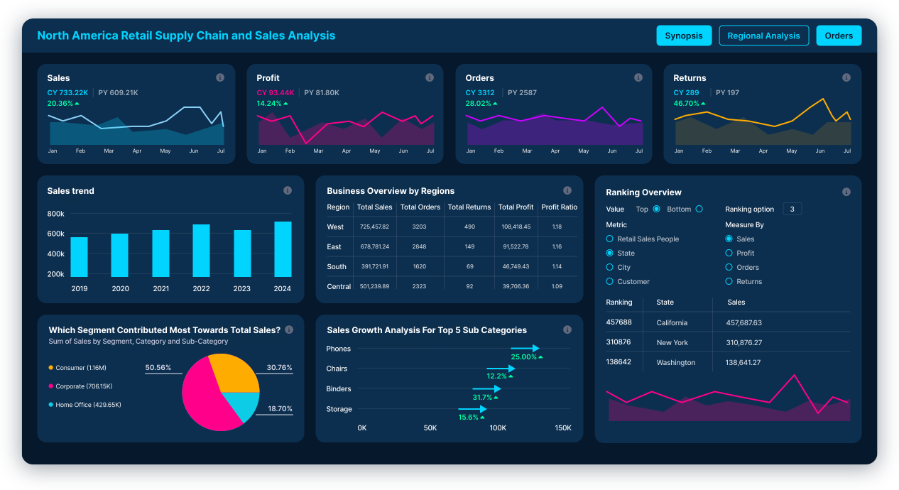
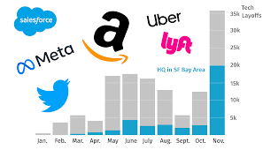
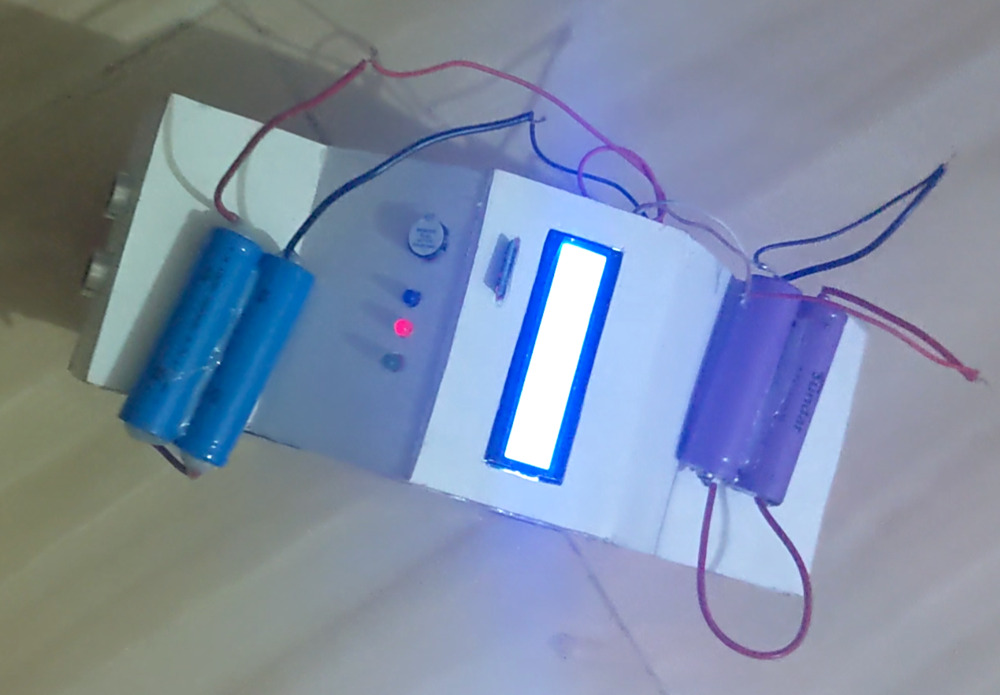

About Me
I am a passionate Data Analyst with a strong foundation in SQL for data querying and cleaning, and expertise in Python for exploratory data analysis and visualization. I have hands-on experience with Excel dashboards and Power BI for creating insightful reports. My projects include analyzing global layoffs trends and salary data in the data science field, revealing key insights like the US leading in layoffs and higher pay for data scientists.

Performed data cleaning on a global layoffs dataset using SQL to improve data quality and ensure accurate analysis. The process included removing duplicates, standardizing company and industry names, handling missing values, and correcting date formats.
Key Actions: Duplicate records were removed, inconsistent data entries were standardized, null values were handled appropriately, and the dataset was structured to support reliable exploratory data analysis.
Exploratory Data Analysis

Conducted exploratory data analysis on a cleaned global layoffs dataset using SQL to identify trends across companies, industries, countries, and time periods. The analysis included aggregations by company, industry, and country, as well as yearly and monthly trend analysis. SQL window functions were used to calculate rolling totals, and DENSE_RANK() was applied to identify companies with the highest layoffs each year.
Key Insights: The United States recorded the highest number of layoffs globally, major technology companies such as Amazon experienced significant workforce reductions, and layoffs increased during recent economic downturn periods.
Data Professionals Survey Analysis (Power BI)

Performed data cleaning and transformation in Power BI using Power Query before building interactive visualizations on a real-world dataset of data professionals. The project analyzed salary distribution, job roles, programming language preferences, and overall job satisfaction across different data-related careers.
Key Insights: Data scientists recorded the highest average salaries among data professionals, while roles such as data analysts showed high job satisfaction and comfort levels. The dashboard highlights trends in skills, compensation, and career preferences within the data industry.
Vehicle Safe Distance Monitoring System

Developed a vehicle safety system using ultrasonic sensors and a microcontroller to monitor front and rear distances in real time.
Implemented distance measurement and alert mechanisms with automatic braking logic to reduce collision risks.
Applied embedded systems programming (C/C++), circuit design, sensor calibration, and simulation using Proteus.